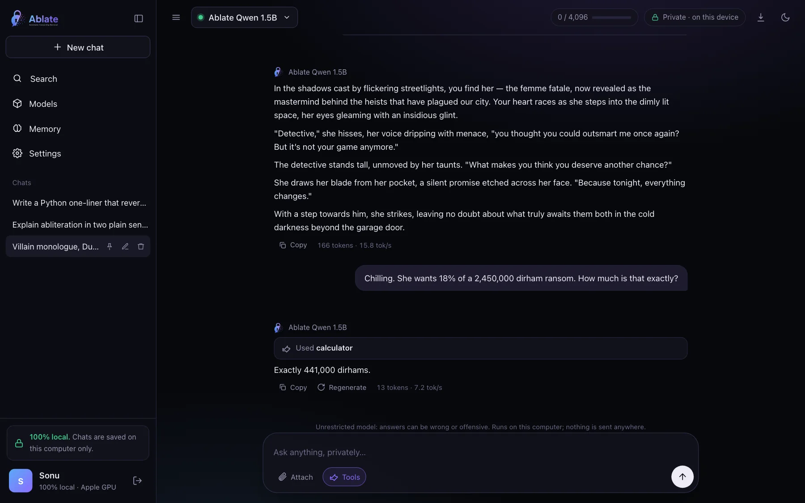

Chat history and search
Every conversation is saved in a local SQLite database. Search titles and messages ChatGPT-style with ⌘K, pin, rename, delete, and export any chat to Markdown.
Ablate Chat · open source by AI Anytime
Ablate Chat runs unrestricted small language models on your own computer, in your browser. It downloads a model once, then works offline. No account, no cloud, no telemetry.

Features
Every conversation is saved in a local SQLite database. Search titles and messages ChatGPT-style with ⌘K, pin, rename, delete, and export any chat to Markdown.
Set how many tokens of conversation the model sees, up to its limit. A meter shows how much each reply used, and the oldest messages are dropped first.
The whole conversation is passed back as context, so follow-up questions work. Saved memories add facts about you to every chat.
Calculator, date and time, and search across your past chats run locally. Web-page fetching is available and off by default.
Copy any answer or code block in one click. Edit an earlier message and continue from there, regenerate, or stop mid-answer.
Drop in text, code, CSV or Markdown files. They are read in your browser and added to the prompt; nothing is uploaded anywhere.
A local profile with your photo and an optional passcode. With a passcode you can share the app with other devices on your Wi-Fi using --share.
First run asks users to confirm they are adults and accept the terms, privacy policy and acceptable use policy.
POST /v1/chat/completions with streaming, on localhost. Works with the OpenAI SDKs, editors and agent frameworks.
For developers
Load a model in the app, then call it like any OpenAI model. Requests from your own computer need no key; other devices use the key shown in Settings.
from openai import OpenAI client = OpenAI(base_url="http://localhost:7861/v1", api_key="local") reply = client.chat.completions.create( model="ai-anytime/qwen-1.5b-abliterated", messages=[{"role": "user", "content": "Write a villain monologue."}], stream=True, ) for chunk in reply: print(chunk.choices[0].delta.content or "", end="")
Commands
| Command | What it does |
|---|---|
ablate chat | Open the app at http://localhost:7861 |
ablate chat --model ai-anytime/qwen-1.5b-abliterated | Download (once) and load a model at start |
ablate chat --share | Let other devices on your network sign in with your passcode |
ablate chat --port 8080 --no-browser | Different port, do not open a browser tab |
Yes. Install with pip install "ablate-llm[all]", run ablate chat, and download one of the AI Anytime models. After that one-time download the model runs fully offline on your CPU or GPU. Your chats are saved as files on your computer and never leave it.
No. Prompts are processed by the model on your own hardware, and chats, memories and your profile are kept in a local SQLite database in ~/.ablate/chat. The app only goes online to download a model you choose, or to fetch a web page if you turn on network tools. There is no telemetry and no AI Anytime server involved.
Yes. Each conversation is sent to the model as context, so follow-up questions work. You set the context window in Settings; when a chat grows past it, the oldest messages are left out first and the app tells you. Saved memories add facts about you to every chat.
Yes. Ablate Chat has agentic tool calling: a calculator, the current date and time, and search across your past chats all run locally. A web-page fetch tool is available but off by default, so the app stays offline unless you turn it on.
Yes. ablate chat serves an OpenAI-compatible endpoint at http://localhost:7861/v1. Point any OpenAI SDK, editor plugin or agent framework at that base URL and use the loaded model's id.
Any recent laptop works. The 1B and 1.5B models need about 8 GB of RAM; the 3B model is happiest with 16 GB. Apple Silicon Macs use the GPU automatically, NVIDIA GPUs use CUDA, and everything also runs on CPU, just more slowly.
Open source by AI Anytime. Install it, run ablate chat, and download a model once.